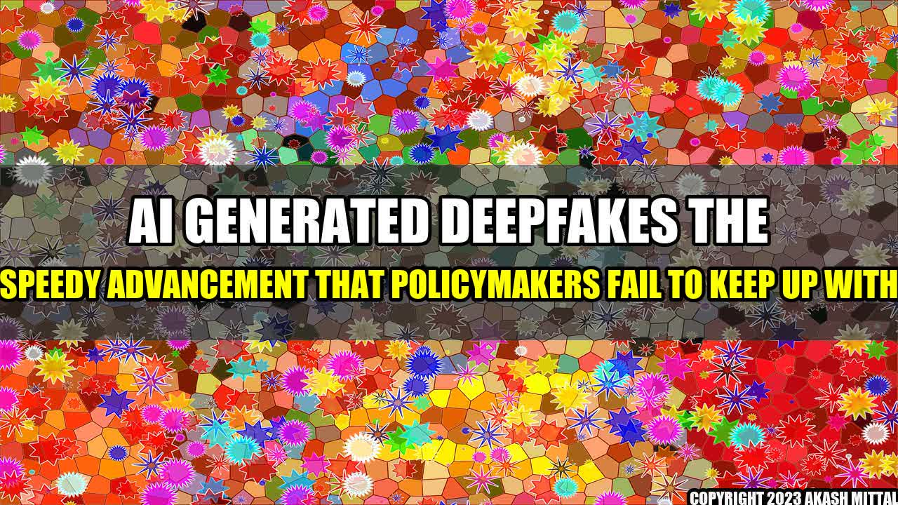

AI-generated Deepfakes: The Speedy Advancement That Policymakers Fail to Keep Up With

Deepfakes are digital manipulations of audio, videos, or images to create a falsified representation of an individual or event. While initially used for entertainment purposes, they have now taken a more serious turn.
A certain CEO of a renowned technology company once joked how AI could create fake videos of him speaking Mandarin, which in reality, he was unable to do. The audience found it humorous, but soon after, AI-generated deepfakes started circulating across the internet, becoming more and more advanced with time.
The pressing issue at hand is the malicious use of deepfakes. They can be utilized to defame or discredit an individual, extract sensitive information, or majorly manipulate elections, all with almost perfect accuracy.
Examples of AI-generated Deepfakes
Major Companies Contributing to AI-generated Deepfakes
- NVIDIA - Providing powerful GPUs for cutting-edge AI research.
- OpenAI - Advancing AI responsibly through research.
- Microsoft - Creating advanced AI tools.
Conclusion
- The fast-paced advancement of technology requires just as fast-paced policymaking to keep up with the potential threats and risks posed by technology. However, policymakers seem to be lagging severely in regard to AI-generated deepfakes.
- The malicious use of deepfakes is a serious concern that needs to be addressed to prevent potential harm, which could arise not only for individual reputations but also for democratic systems.
- Major companies such as NVIDIA, OpenAI, and Microsoft have a responsibility to use their technology to prevent harmful uses of deepfakes and to work with policymakers to create regulations and standards to mitigate risks.
Further Readings
Akash Mittal Tech Article
Share on Twitter Share on LinkedIn